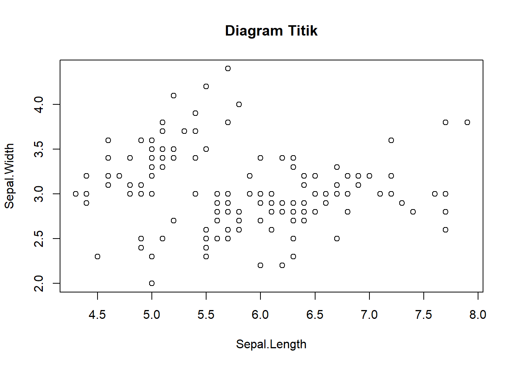
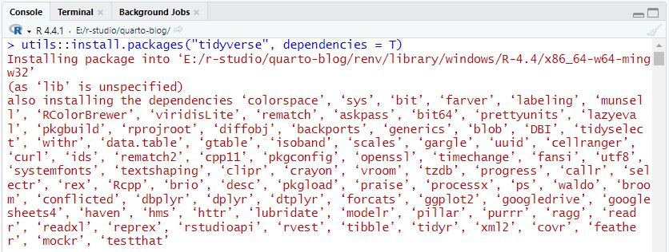
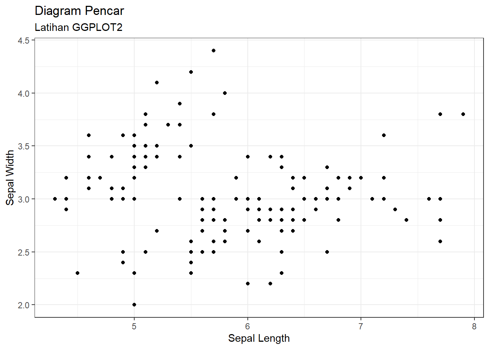
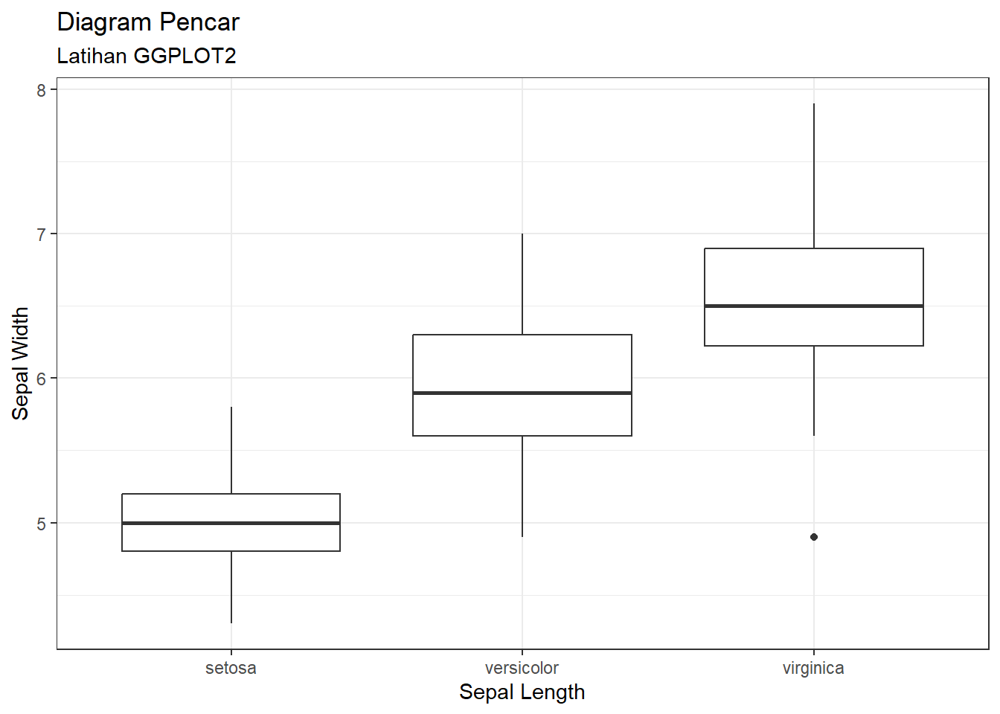

rataan <- function(data.vektor) {
rata.rata <- 0 # inisiasi nilai awal
n <- length(data.vektor) # banyaknya data
# menjumlahkan semua data pada data.vektor
for (i in 1:n) {
rata.rata <- rata.rata + data.vektor[i]
}
# setelah mendapatkan penjumlahan semua data,
# dibagi dengan banyaknya data
rata.rata <- rata.rata/n
return(rata.rata)
}Outline
- Pendahuluan
- Paket untuk Manajemen Data
- Instalasi dan Aktivasi Paket
- Contoh Penggunaan
readr,readxl, danhaventidyverseggplot2
- Kesimpulan
Pendahuluan
Program R dapat digunakan untuk melakukan komputasi berbagai metode dalam statistika. Sebagai contoh, kita akan melakukan perhitungan untuk rata-rata sampel. Formula yang digunakan adalah:
\[ \bar{x} = \frac{\sum_{i = 1}^n x_i}{n} \]
Selanjutnya kita membuat formula tersebut dalam bentuk fungsi di R:
Selanjutnya akan kita coba untuk menghitung rata-rata dari sebuah vektor:
mydata <- c(6, 7, 6, 8, 2, 6, 5, 5, 3, 9)
rataan(mydata)[1] 5.7Nah, contoh diatas merupakan contoh sederhana dalam menggunakan R untuk melakukan komputasi statistik. Tentu kita dapat melakukan komputasi pada metode yang lebih kompleks.
Berikutnya kita akan gunakan fungsi yang sudah tersedia pada R, yaitu mean():
mydata <- c(6, 7, 6, 8, 2, 6, 5, 5, 3, 9)
mean(mydata)[1] 5.7Dengan fungsi-fungsi yang telah tersedia (tersedia dalam sebuah paket fungsi), kita mampu melakukan pengolahan data dengan lebih cepat tanpa harus menyusun fungsi-fungsi yang rumit.
Namun anda harus tetap menyusun kode-kode sesuai dengan tujuan analisis anda. Seperti dalam mempersiapkan data untuk dianalisis, menyusun grafis yang mudah dipahami, eksplorasi data untuk mempersiapkan analisis, dsb. Berikut contoh perbedaan grafis sederhana dan yang telah dikosumisasi:
data(iris)
plot(iris$Sepal.Length, iris$Sepal.Width,
main = "Diagram Titik",
xlab = "Sepal.Length",
ylab = "Sepal.Width")
ggplot(iris, aes(Sepal.Length, Sepal.Width)) +
geom_point(aes(color = Species)) +
ggtitle(label = "Diagram Titik", subtitle = "Latihan R") +
theme_classic()
Paket
Paket pada R merupakan kumpulan fungsi yang siap digunakan oleh pengguna R. Paket ini dikembangkan oleh praktisi baik perorangan, kelompok, maupun lembaga. Setiap paket memiliki berbagai macam fungsi yang dapat digunakan untuk kebutuhan tertentu. Semisal paket ggplot2 merupakan paket yang ditujukan untuk membuat grafik yang lebih menarik (seperti contoh sebelumnya).
Hampir semua paket pada R tidak berdiri sendiri, artinya fungsi-fungsi yang dibuat memerlukan fungsi-fungsi yang tersedia dipaket lain. Hal ini ditujukan untuk melakukan efisiensi baik dalam pengembangan maupun penggunaan. Sehingga dalam instalasi paket kita juga harus menyertakan informasi bahwa kita juga akan menginstal paket-paket lain yang dibutuhkan (dependencies). Instalasi paket akan dijelaskan pada bagian berikutnya.
Paket untuk Manajemen Data
tidyverse
Tidyverse merupakan paket lengkap yang terdiri dari beberapa paket untuk keperluan manajemen data seperti dplyr dan tidyr.
ggplot2
Paket ggplot2 ditujukan untuk menampilkan visualisasi yang lebih baik dengan tambahan kostumisasi yang lebih lengkap dibandingkan fungsi plot()
readr,readxl, danhaven
Merupakan paket yang diperlukan untuk melakukan import dan export data dengan format csv, xlsx, spv, dsb.
Instalasi Paket
Instalasi paket pada R memerlukan koneksi internet, karena paket diunduh dari sebuah server. Fungsi untuk melakukan instalisasi paket adalah install.packages("nama.paket", dependencies = TRUE). Tambahan independencies = TRUE ditujukan agar proses instalasi paket juga diikuti dengan instalasi paket-paket yang lain seperti yang dicontohkan pada gambar berikut:

Berikut adalah contoh instalasi paket tidyverse:
# Jalankan fungsi berikut pada console
options(timeout = 10000) # dibutuhkan saat koneksi lambat
install.packages("tidyverse")Beberapa paket memerlukan instalasi yang cukup lama karena kecepatan download, ukuran paket yang cukup besar, dan atau banyak paket yang juga harus diinstal (dependencies)
Aktivasi Paket
Fungsi-fungsi pada paket yang telah terinstal hanya dapat digunakan jika paket telah diaktifkan. Untuk mengaktifkan paket, gunakan fungsi library(nama.paket).
library(tidyverse)Contoh Penggunaan tidyverse dan ggplot2
Contoh Penggunaan tidyverse
Kita akan mencoba beberapa fungsi yang dapat digunakan pada paket tidyverse. Seperti yang telah dijelaskan sebelumnya bahwa paket tidyverse digunakan untuk melakukan manajemen data.
Pertama kita akan siapkan data sederhana yang akan kita gunakan selanjutnya:
hipertensi <- rep(c("Ya", "Tidak"), 5)
paritas <- c(5, 3, 1, 3, 2, 2, 7, 2, 0, 1)
usia <- c(23, 27, 28, 31, 31, NA, 29, 23, 37, 22)
pendidikan <- c("SD", "SD", "SMP", "SMA", "SD", "SMP", "SMA", "SMA", "SD", "SMA")
ekonomi <- c("Rendah", "Rendah", "Menengah", "Rendah", "Menengah", "Menengah", "Tinggi", "Menengah", "Tinggi", "Rendah")
mydata <- data.frame(
hipertensi,
paritas,
usia,
pendidikan,
ekonomi
)| hipertensi | paritas | usia | pendidikan | ekonomi |
|---|---|---|---|---|
| Ya | 5 | 23 | SD | Rendah |
| Tidak | 3 | 27 | SD | Rendah |
| Ya | 1 | 28 | SMP | Menengah |
| Tidak | 3 | 31 | SMA | Rendah |
| Ya | 2 | 31 | SD | Menengah |
| Tidak | 2 | NA | SMP | Menengah |
| Ya | 7 | 29 | SMA | Tinggi |
| Tidak | 2 | 23 | SMA | Menengah |
| Ya | 0 | 37 | SD | Tinggi |
| Tidak | 1 | 22 | SMA | Rendah |
Contoh Fungsi filter()
Fungsi filter() digunakan untuk menyeleksi data berdasarkan ketentuan:
==, jika sama dengan nilai tertentu>=dan<=, jika lebih/kurang dari sama dengan nilai tertentu>dan<, jika lebih/kurang dari nilai tertentu!=, jika tidak sama dengan nilai tertentu
Semisal kita ingin memilih data dengan usia yang kurang dari 30 tahun:
mydata %>%
filter(usia < 30) hipertensi paritas usia pendidikan ekonomi
1 Ya 5 23 SD Rendah
2 Tidak 3 27 SD Rendah
3 Ya 1 28 SMP Menengah
4 Ya 7 29 SMA Tinggi
5 Tidak 2 23 SMA Menengah
6 Tidak 1 22 SMA Rendah[Latihan Mandiri] Sekarang kita dapat melakukan percobaan penyeleksian dengan berbagai macam ketentuan:
paritaslebih dari samadengan 3hipertensisama dengan"YA"ekonomirendah
Penggunaan
==,!=,<,>,<=,>=, merupakan bagian dari operator perbandingan. Penjelasan lebih lengkap dapat dipelajari dari berbagai sumber seperti:
Contoh Penggunaan ggplot2
Pastikan bahwa paket ggplot2 telah aktif:
library(ggplot2)Selanjutnya kita akan menggunakan data iris yang telah tersedia di R. Gunakan kode berikut untuk mengaktifkan data iris:
data(iris)Kemudian kita akan mencoba membuat diagram pencar dan diagram kotak.
Diagram Pencar
# Diagram Pencar
## Inisiasi Data yang digunakan,
## Nama Variabel X dan Nama Variabel Y
ggplot(data = iris, mapping = aes(x = Sepal.Length, y = Sepal.Width)) +
## Jenis Diagram: Pencar
geom_point() +
## Judul dan Subjudul
ggtitle(label = "Diagram Pencar", subtitle = "Latihan GGPLOT2") +
## X & Y Label
xlab("Sepal Length") + ylab("Sepal Width") +
## Tema Diagram
theme_bw()
Diagram Kotak
# Diagram Kotak
## Inisiasi Data yang digunakan,
## Nama Variabel X dan Nama Variabel Y
ggplot(data = iris, mapping = aes(x = Species, y = Sepal.Length)) +
## Jenis Diagram: Boxplot
geom_boxplot() +
## Judul dan Subjudul
ggtitle(label = "Diagram Pencar", subtitle = "Latihan GGPLOT2") +
## X & Y Label
xlab("Sepal Length") + ylab("Sepal Width") +
## Tema Diagram
theme_bw()
Contoh Penggunaan readr, readxl, dan haven
Ketiga paket ini digunakan untuk melakukan import dan export data.
readr, untuk import & export data dengan format tabel seperticsvreadxl, untuk import & export data dengan format Ms. Excelhaven, untuk import & export data dengan format aplikasi olah data lainnya
R Studio memberikan kemudahan dalam import data dalam berbagai format. Kita dapat mengunakan icon Import Dataset pada Tab Environment untuk import data, dan fungsi berikut untuk export data:
write_csv()atauwrite_delim()untuk exportcsvwrite_dta()export ke formatdtaStatawrite_sav()export ke formatsavSPSSwrite_xpt()export ke formatxptSAS
Kesimpulan
- Paket pada R merupakan kumpulan fungsi-fungsi sangat penting dalam proses pengolahan data.
- Namun, kita tidak harus menggunakan semua fungsi yang tersedia. Cukup pada fungsi-fungsi umum untuk kebutuhan pengolahan data.
- Paket penting dalam manajemen data adalah
tidyversedan dalam visualisasi adalahggplot2 - Sangat penting mempelajari, memahami, dan mempraktikkan penggunaan Operator Hubungan dan Operator Logika untuk mempermudahkan dalam melakukan manajemen data
- Meski paket telah memiliki fungsi-fungsi yang kita butuhkan, kita tetap harus menyusun kode untuk menyesuaikan kebutuhan pengolahan data.